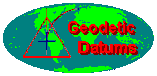
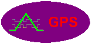

Coordinate Systems Overview
Peter H. Dana
These materials were developed by Peter H. Dana, Department of
Geography, University of Texas at Austin, 1995. These
materials may
be used for study, research, and education in not-for-profit
applications.
If you link to or cite these materials, please credit the
author, Peter
H. Dana, The Geographer's Craft Project, Department of
Geography, The University
of Colorado at Boulder. These materials may not be copied
to or issued
from another Web server without the author's express
permission.
Copyright © 1999-2015 Peter H. Dana. All commercial rights
are reserved.
If you have comments or suggestions, please contact the author
or Kenneth
E. Foote at ken.foote@uconn.edu.
This page is available in a framed
version. For convenience, a Full
Table of Contents is provided.
Revised: 12/15/99 (Orignally published in July, 1995)
Associated Overviews



Introduction
-
This overview of coordinate systems for georeferencing provides
a brief
description of local and global systems for use in precise
positioning,
navigation, and geographic information systems for the location
of points
in space.
-
There are many different coordinate systems, based on a variety
of geodetic
datums, units, projections, and reference systems in use today.
-
As an example, this overview often uses the position of one of
the thousands
of geodetic control points in the United States, the star in the
hand of
the Goddess of Liberty atop the Capitol building in Austin,
Texas.
Table
of Contents
Basic Coordinate Systems
-
There are many basic coordinate systems familiar to students of
geometry
and trigonometry.
-
These systems can represent points in two-dimensional or
three-dimensional
space.
-
René Descartes (1596-1650) introduced systems of coordinates
based
on orthogonal (right angle) coordinates.
-
These two and three-dimensional systems used in analytic
geometry are often
referred to as Cartesian systems.
-
Similar systems based on angles from baselines are often
referred to as
polar systems.
-
Plane Coordinate Systems
-
Two-dimensional coordinate systems are defined
with respect
to a single plane.
-
Three-Dimensional Systems
-
Table
of Contents
Reference Ellipsoids
-
Ellipsoidal earth models are required for accurate range and
bearing calculations
over long distances. Loran-C, and GPS navigation receivers use
ellipsoidal
earth models to compute position and waypoint information.
Ellipsoidal
models define an ellipsoid with an equatorial radius and a polar
radius.
The best of these models can represent the shape of the earth
over the
smoothed, averaged sea-surface to within about one-hundred
meters.
-
Reference ellipsoids are defined by semi-major (equatorial
radius) and
semi-minor (polar radius) axes.
-
Other reference ellipsoid parameters such as flattening, and
eccentricity
are computed from these two terms.
-
Reference
Ellipsoid Parameters
-
Many reference ellipsoids are in use by different nations and
agencies.
-
Selected
Reference Ellipsoids
-
Table
of Contents
Geodetic Datums
-
Geodetic datums define the reference systems that describe the
size and
shape of the earth. Hundreds of different datums have been used
to frame
position descriptions since the first estimates of the earth's
size were
made by Aristotle. Datums have evolved from those describing a
spherical
earth to ellipsoidal models derived from years of satellite
measurements.
-
Modern geodetic datums range from flat-earth models used for
plane surveying
to complex models used for international applications which
completely
describe the size, shape, orientation, gravity field, and
angular velocity
of the earth. While cartography, surveying, navigation, and
astronomy all
make use of geodetic datums, the science of geodesy is the
central discipline
for the topic.
-
Referencing geodetic coordinates to the wrong datum can result
in position
errors of hundreds of meters. Different nations and agencies use
different
datums as the basis for coordinate systems used to identify
positions in
geographic information systems, precise positioning systems, and
navigation
systems. The diversity of datums in use today and the
technological advancements
that have made possible global positioning measurements with
sub-meter
accuracies requires careful datum selection and careful
conversion between
coordinates in different datums.
-
 Geodetic
Datum
Overview, Department of Geography, University of Texas at
Austin
Geodetic
Datum
Overview, Department of Geography, University of Texas at
Austin
-
Table
of Contents
Coordinate Systems
Global Systems
-
Latitude, Longitude, Height
-
The most commonly used coordinate system today is the
latitude, longitude,
and height system.
-
The Prime Meridian and the Equator are the reference planes
used to define
latitude and longitude.
-
Equator
and Prime Meridian
-
The geodetic latitude (there are many other defined latitudes)
of a point
is the angle from the equatorial plane to the vertical
direction of a line
normal to the reference ellipsoid.
-
The geodetic longitude of a point is the angle between a
reference plane
and a plane passing through the point, both planes being
perpendicular
to the equatorial plane.
-
The geodetic height at a point is the distance from the
reference ellipsoid
to the point in a direction normal to the ellipsoid.
-
Geodetic
Latitude, Longitude, and Height
-
Table
of Contents
-
ECEF X, Y, Z
-
Earth Centered, Earth Fixed Cartesian coordinates are also
used to define
three dimensional positions.
-
Earth centered, earth-fixed, X, Y, and Z, Cartesian
coordinates (XYZ) define
three dimensional positions with respect to the center of mass
of the reference
ellipsoid.
-
The Z-axis points toward the North Pole.
-
The X-axis is defined by the intersection of the plane define
by the prime
meridian and the equatorial plane.
-
The Y-axis completes a right handed orthogonal system by a
plane 90 degrees
east of the X-axis and its intersection with the equator.
-
ECEF
X, Y, and Z
-
ECEF
X, Y, Z Coordinate Example
-
Table
of Contents
-
Universal Transverse Mercator
(UTM)
-
Universal Transverse Mercator (UTM) coordinates define two
dimensional,
horizontal, positions.
-
UTM zone numbers designate 6 degree longitudinal strips
extending from
80 degrees South latitude to 84 degrees North latitude.
-
UTM zone characters designate 8 degree zones extending north
and south
from the equator.
-
There are special UTM zones between 0 degrees and 36 degrees
longitude
above 72 degrees latitude and a special zone 32 between 56
degrees and
64 degrees north latitude.
-
UTM
Zones
-
Each zone has a central meridian. Zone 14, for example, has a
central meridian
of 99 degrees west longitude. The zone extends from 96 to 102
degrees west
longitude.
-
UTM
Zone 14
-
Eastings are measured from the central meridian (with a 500km
false easting
to insure positive coordinates).
-
Northings are measured from the equator (with a 10,000km false
northing
for positions south of the equator).
-
UTM
Zone 14 Example Detail
-
UTM
Coordinate Example
-
Table
of Contents
-
Military Grid Reference
System (MGRS)
-
The Military Grid Reference System (MGRS) is an extension of
the UTM system.
UTM zone number and zone character are used to identify an
area 6 degrees
in east-west extent and 8 degrees in north-south extent.
-
UTM zone number and designator are followed by 100 km square
easting and
northing identifiers.
-
The system uses a set of alphabetic characters for the 100 km
grid squares.
-
Starting at the 180 degree meridian the characters A to Z
(omitting I and
O) are used for 18 degrees before starting over.
-
From the equator north the characters A to V (omitting I and
O) are used
for 100 km squares, repeating every 2,000 km.
-
Northing designators normally begin with 'A' at the equator
for odd numbered
UTM easting zones.
-
For even numbered easting zones the northing designators are
offset by
five characters, starting at the equator with 'F'.
-
South of the equator, the characters continue the pattern
set north of
the equator.
-
Complicating the system, ellipsoid junctions (spheroid
junctions in the
terminology of MGRS) require a shift of 10 characters in the
northing 100
km grid square designators. Different geodetic datums using
different reference
ellipsoids use different starting row offset numbers to
accomplish this.
-
Military
Grid Reference System
-
UTM zone number, UTM zone, and the two 100 km square
characters are followed
by an even number of numeric characters representing easting
and northing
values.
-
If 10 numeric characters are used, a precision of 1 meter is
assumed.
-
2 characters imply a precision of 10 km.
-
From 2 to 10 numeric characters the precision changes from
10 km, 1 km,
100 m 10 m, to 1 m.
-
Table
of Contents
-
World Geographic Reference
System (GEOREF)
-
The World Geographic Reference System is used for aircraft
navigation.
-
GEOREF is based on latitude and longitude.
-
The globe is divided into twelve bands of latitude and
twenty-four zones
of longitude, each 15 degrees in extent.
-
World
Geographic Reference System Index
-
These 15 degree areas are further divided into one degree
units identified
by 15 characters.
-
GEOREF
1 Degree Grid
-
Two numeric characters designate the integer number of minutes
of longitude
east of the one degree quadrangle boundary longitude.
-
Two additional numeric characters designate the number of
minutes of latitude
north of the one degree quadrangle boundary latitude.
-
GEOREF
Example
-
The World Geographic Reference System can be extended to refer
to larger
areas of operation.
-
A larger East-West area can be designated by adding an "S" and
the number
of of nautical miles to the east and west sides of the
referenced point.
-
A larger north-south area can be designated by adding an "X"
and the number
of nautical miles to the north and south.
-
A circular area can be designated by adding an "R" and the
radius of the
circle in nautical miles.
-
An altitude zone can be defined by adding an "H" and a value
of altitude.
The number of digits indicates the precision of the value.
Five digits
implies units in feet. Four digits implies tens of feet, three
digits,
hundreds of feet, and two digits, thousands of feet.
-
Table
of Contents
-
National Grid Systems
-
Many nations have defined grid systems based on coordinates
that cover
their territory. Australia, Belgium, Great Britain, Finland
, Ireland, Italy, The Netherlands, New Zealand, and Sweden are
a examples
of nations that have defined a National Grid System.
-
British National Grid (BNG)
-
The British National Grid (BNG) is based on the National
Grid System of
England, administered by the British Ordnance Survey.
-
The BNG has been based on a Transverse Mercator projection
since the 1920s.
-
The modern BNG is based on the Ordnance Survey of Great
Britain Datum 1936
(Airy Ellipsoid).
-
The true origin of the system is at 49 degrees north
latitude and 2 degrees
west longitude.
-
The false origin is 400 km west and 100 km north.
-
Scale at the central meridian is 0.9996012717
-
The first BNG designator defines a 500 km square.
-
The second designator defines a 100 km square.
-
British
National
Grid 100 km Squares
-
The remaining numeric characters define 10 km, 1 km, 100 m,
10 m, or 1
m eastings and northings.
-
British
National Grid Example
-
Table
of Contents
-
Irish National Grid
-
The Irish National Grid (ING) is administered by the Irish
Ordnance Survey.
-
The ING has been based on a Transverse Mercator projection
since the 1920s.
-
The ING is based on the Ordnance Survey of Great Britain Datum
1936 or
the Ireland Datum 1965.
-
The true origin of the system is at 53 degrees, 30 minutes
north latitude
and 8 degrees west longitude.
-
The false origin is 200 km west and 250 km south of the true
origin.
-
Scale at the central meridian is 1.000035.
-
The first ING designator defines a 100 km square.
-
Irish
National Grid 100 km Squares
-
The remaining numeric characters define 10 km, 1 km, 100 m, 10
m, or 1
m eastings and northings.
-
Irish
National Grid Example
-
Table
of Contents
-
State Plane Coordinates
-
In the United States, the State Plane System was developed in
the 1930s
and was based on the North American Datum 1927 (NAD27).
-
The State Plane System 1983 is based on the North American
Datum 1983 (NAD83).
-
NAD 83 coordinates are based on the meter.
-
State plane systems were developed in order to provide local
reference
systems that were tied to a national datum.
-
Some smaller states use a single state plane zone.
-
Larger states are divided into several zones.
-
State plane zone boundaries often follow county boundaries.
-
Lambert Conformal Conic projections are used for rectangular
zones with
a larger east-west than north- south extent.
-
Transverse Mercator projections are used to define zones with
a larger
north-south extent.
-
One State Plane zone in Alaska uses an oblique Mercator
projection for
a thin diagonal area.
-
Table
of Contents
-
Public Land Rectangular
Surveys
-
Public Land Rectangular Surveys have been used since the 1790s
to identify
public lands in the United States.
-
The system is based on principal meridians and baselines.
-
Townships, approximately six miles square, are numbered with
reference
to baseline and principal meridian.
-
Ranges are the distances and directions from baseline and
meridian expressed
in numbers of townships.
-
Every four townships a new baseline is established so that
orthogonal meridians
can remain north oriented.
-
U.S.
Rectangular Survey
-
Sections, approximately one mile square, are numbered from 1
to 36 within
a township.
-
Township
Sections
-
Sections are divided into quarter sections.
-
Quarter sections are divided into 40-acre, quarter-quarter
sections.
-
Quarter-quarter sections are sometimes divided into 10-acre
areas.
-
Subdivided
Section
-
Fractional units of section quarters, designated as numbered
lots, often
result from irregular claim boundaries, rivers, lakes, etc.
-
Abbreviations are used for Township (T or Tps), Ranges (R or
Rs), Sections(sec
or secs), and directions (N, E, S, W, NE, etc.).
-
A
Township and Range Property Description
-
Table
of Contents
-
Metes and Bounds
-
Metes and Bounds identify the boundaries of land parcels by
describing
lengths and directions of lines.
-
Lines are described with respect to natural or artificial
monuments and
baselines defined by these monuments.
-
The metes and bounds survey is based on a point of beginning,
an established
monument.
-
Line lengths are measured along a horizontal level plane.
-
Directions are bearing angles measured with respect to a
previous line
in the survey.
-
Metes
and Bounds Example
-
Table
of Contents
-
Miscellaneous Systems
-
Postal Codes
-
Postal codes such as the United States ZIP code can be used to
identify
areas.
-
Three digit codes identify large areas.
-
Maidenhead Grid Squares
-
The Maidenhead Grid Square system was designed to facilitate
the designation
of geographical positions for use within the amateur radio
community. The
Maidenhead Grid identifies "Fields" consisting of an area
twenty degrees
of longitude by ten degrees of latitude with two alphabetic
characters.
An additional set of two numeric digits locates a specific
two-degrees
of longitude by one-degree of latitude" grid square" area
within the Field.
Two additional alphabetic characters can be used to refer to a
5.0 minutes
of longitude by 2.5 minutes of latitude "Sub-Square" within
the Grid Square.
In each case the longitude character precedes the latitude
designator.
-
Variations and extensions to the Maidenhead system are in
use. Some Global
Positioning System (GPS) receivers display positions in an
extended Maidenhead
system that appends one or two additional sets of numeric
and alphabetic
pairs, increasing the precision with which a location can be
specified.
-
Some amateur radio operators use other terms for the
Maidenhead system
such as World Wide Locator (WWL) squares or QTH locator
squares.
-
Ham operators use these grid designators to communicate
transmitter positions
to each other. Several utility programs are available to
convert between
latitude and longitude and the Maidenhead Grid Square
system. Some of these
also allow computation of distance and azimuth between
stations.
-
Maidenhead
Grid Square Fields
-
Maidenhead
Grid Squares
-
Maidenhead
Grid Sub-Squares
-
AT&T V and H
Coordinate System
-
The AT&T V and H (Vertical and Horizontal) coordinate
system was devised
in 1957 by Jay K. Donald for the easy computation of distances
between
telephone switching centers. The system is based on the Donald
Elliptic
Projection, a two-point equidistant projection covering the
land masses
of the continental United States and Canada. The system is
based on units
of the square-root of one-tenth of a mile.
-
Once the coordinates of switching sites are known, distances
between sites
can be simply found by calculating the square root of the sum
of the squares
of the differences in the vertical and horizontal coordinates
divided by
ten. Designed for simple distance calculations that could be
accomplished
in the field with a slide rule, the system is still found
imbedded in some
telephone rate computation software.
-
Navigation System
Coordinates
-
Navigation systems can define locations by referencing
measurements of
electronic signals.
-
Loran-C time-differences can identify positions with an
accuracy of one-quarter
of a mile.
-
Omega phase-differences can identify positions with an
accuracy of 1-5
kms.
-
VOR-DME (Very high frequency Omni Range - Distance
Measuring) measurements
from an aircraft can identify locations with an accuracy of
0.5-3 kms.
-
Navigational buoys, and other aids to navigation can be used
as visual
reference points, bearings to visual references can identify
locations
with varying accuracies.
-
Navigational
Buoy
-
Table
of Contents
-
References
-
Defense Mapping Agency. 1977. The American Practical Navigator
Publication
No. 9, Defense Mapping Agency Hydrographic Center.
-
Laurila, Simo H. 1976. Electronic Surveying and Navigation.
New York: John
Wiley & Sons
-
Muehrcke, P.C and Juliana O. Muehrcke. 1992. Map Use. Madison,
WI: JP Publications.
-
National Imagery and Mapping Agency. 1997. World Geodetic
System 1984 (WGS
84) - Its Definition and Relationships with Local Geodetic
Systems, 3rd
Edition. Washington, DC: National Imagery and Mapping Agency.
-
Snyder, John P. 1987. Map Projections, A Working Manual.
Washington, DC:
US Govt. Printing Office.
-
Thomas, P. D. 1970. Spheroidal Geodesics, Reference Systems
and Local Geometry.
Washington, DC: U. S. Naval Oceanographic Office.
-
U. S. Air Force and Navy. 1983. Air Navigation, AFM 51-40.
Washington,
DC: Department of the Air Force.
-
U. S. Army. 1967. TM 5-241-1 Grids and Grid References.
Washington, DC:
Department of the Army.
Table
of Contents
{kind=link}
{kind=link}
{kind=link}
{kind=link}
{kind=link}
{kind=link}
{kind=link}
{kind=link}
{kind=link}
{kind=link}
{kind=link}
{kind=link}
{kind=link}
{kind=link}
{kind=link}
{kind=link}
{kind=link}
{kind=link}
{kind=link}
{kind=link}
{kind=link}
{kind=link}
{kind=link}
{kind=link}
{kind=link}
{kind=link}
{kind=link}
{kind=link}
{kind=link}
{kind=link}
{kind=link}
{kind=link}
{kind=link}
{kind=link}
{kind=link}
{kind=link}
{kind=link}
{kind=link}
{kind=link}
{kind=link}
{kind=link}
{kind=link}
{kind=link}
{kind=link}
{kind=link}
{kind=link}
{kind=link}
{kind=link}
{kind=link}
{kind=link}
{kind=link}
{kind=link}
{kind=link}
{kind=link}
{kind=link}
{kind=link}
{kind=link}